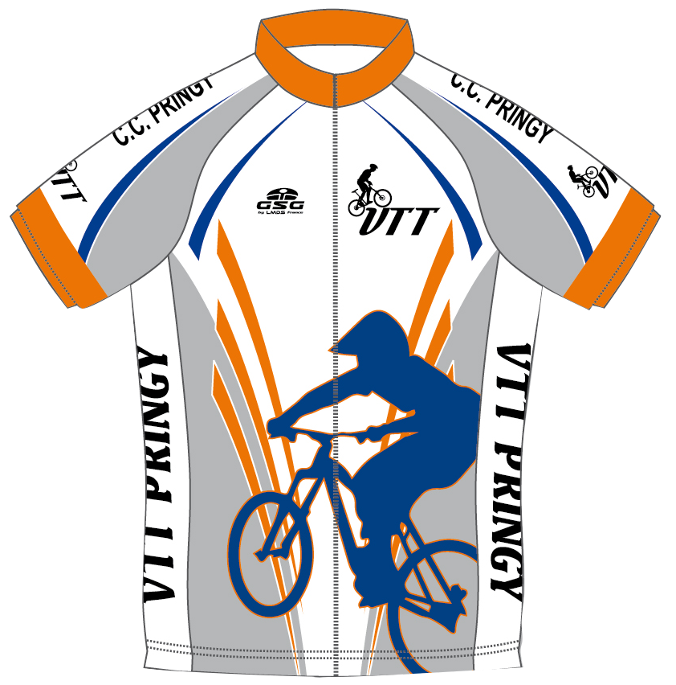
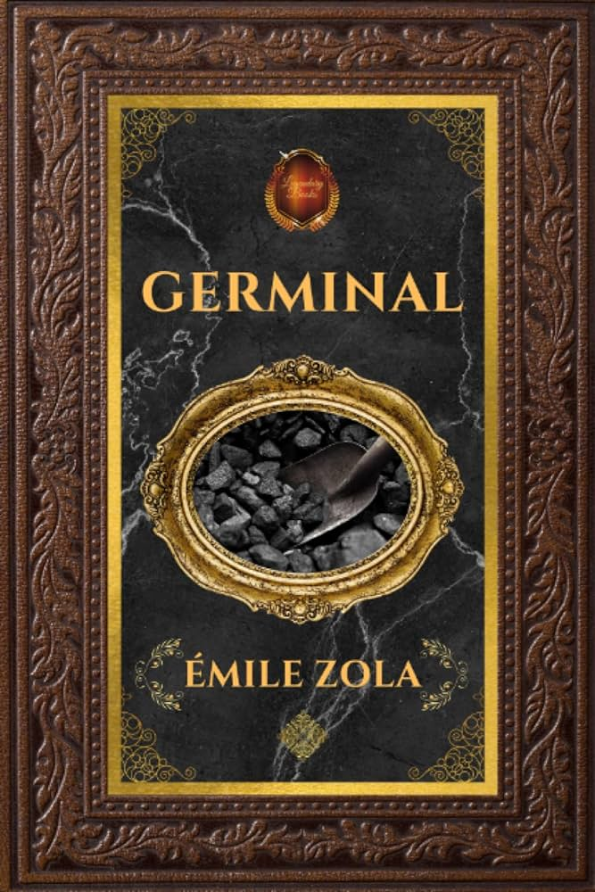
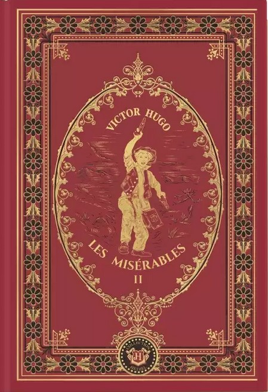
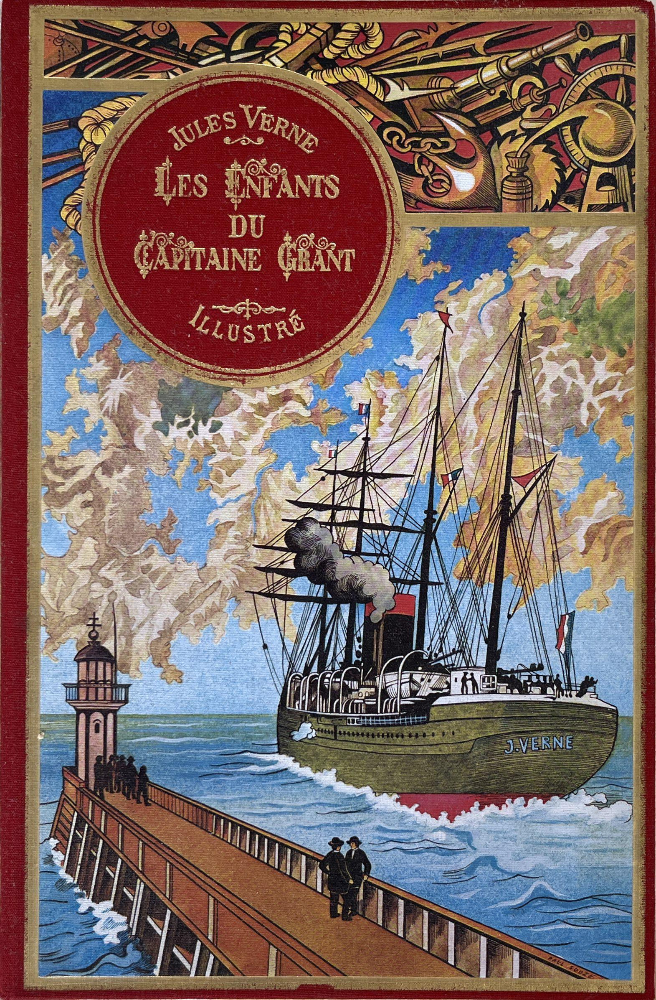

Footballeur au club de l'US Pringy de 2009 à 2023 aux niveaux départemental et régional.

Entraîneur de football pour enfants de 10–11 ans durant la saison 2020–2021 au club de l'US Pringy.

Arbitre départemental dès 2020, puis régional de 2021 à 2023 pour l'US Pringy (74).
Pratique du ski depuis l'âge de 4 ans, avec 4 années en club au Ski Club du Fier à Pringy.
Pratique du VTT au Cyclo Club de Pringy de 2012 à 2020.
Passionné par Zola, Hugo, Verne.


